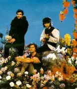

A Legião Urbana foi formada em Brasília, em 1982, por Renato Russo (vocais), Marcelo Bonfá (bateria), Dado Villa-Lobos (guitarra) e Renato Rocha (baixo). O grupo surgiu no cenário do rock nacional durante o movimento do BRock, quando várias bandas brasileiras começaram a se destacar com letras críticas e sonoridade própria.
O primeiro álbum, lançado em 1985, trouxe sucessos como *Será* e *Ainda é Cedo*, e logo a banda conquistou o país. Nos anos seguintes, discos como Dois (1986) e Que País é Este (1987) consolidaram a Legião Urbana como um dos maiores nomes da música brasileira. Suas letras misturavam poesia, crítica social e reflexões pessoais, alcançando diferentes gerações.
A formação com Renato Rocha durou até o final dos anos 1980, mas o trio com Renato Russo, Dado Villa-Lobos e Marcelo Bonfá continuou a lançar álbuns marcantes, como As Quatro Estações (1989) e V (1991).
Com a morte de Renato Russo em 1996, a trajetória da banda chegou ao fim. Ainda assim, o legado da Legião Urbana permanece vivo: suas músicas continuam a ser cantadas, estudadas e admiradas, mantendo o grupo como um dos maiores símbolos do rock brasileiro e da juventude de várias épocas.
Álbum de estreia da banda, marcou o início de uma nova fase do rock brasileiro. Com canções diretas e cheias de energia, como *Será* e *Ainda é Cedo*, trouxe letras que misturavam crítica social e temas juvenis. É considerado um dos discos mais importantes do BRock.
Mais melódico e poético, consolidou a banda no cenário nacional. Traz clássicos como *Tempo Perdido* e *Eduardo e Mônica*, além de faixas intensas como *Índios*. É um álbum que equilibra romantismo e reflexão sobre a vida.
Um disco de protesto, com músicas compostas desde a época do Aborto Elétrico. Repleto de críticas políticas e sociais, tem hinos como *Que País é Este*, *Faroeste Caboclo* e *Eu Sei*. Representa o lado mais contestador da banda.
Um dos álbuns mais aclamados da Legião. Com arranjos mais sofisticados e letras profundas, fala de amor, perdas e amadurecimento. Contém sucessos eternos como *Pais e Filhos*, *Há Tempos* e *Quando o Sol Bater na Janela do Teu Quarto*.
Álbum mais sombrio e introspectivo, reflete conflitos pessoais e sociais. Músicas como *O Teatro dos Vampiros* e *Vento no Litoral* mostram um Renato Russo ainda mais poético e melancólico. É considerado um disco de maturidade artística.
Mais leve e otimista, foi gravado após momentos difíceis do grupo. Suas letras trazem esperança e ternura, como em *Giz*, *Perfeição* e *Vamos Fazer um Filme*. O disco equilibra crítica social com mensagens positivas.
Lançado pouco antes da morte de Renato Russo, é um álbum marcado pela dor e fragilidade. Traz canções emocionantes como *A Via Láctea* e *Dezesseis*. Considerado um dos discos mais tristes e intensos da Legião.
Lançado após a morte de Renato, reúne faixas que não entraram em *A Tempestade*. Apesar de inacabado, apresenta músicas fortes como *Riding Song* e *Clarisse*, servindo como despedida da banda.